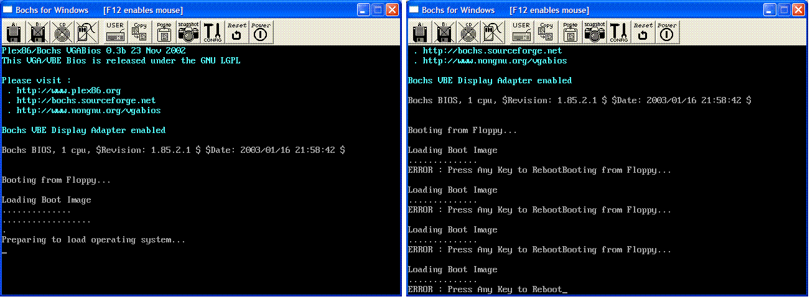

Bootloaders 4
In this page, we are going to use everything we learned to parse the FAT12 file system, and load our second stage loader by name,
This tutorial is going to have a lot of code in it. I will do my best to explain everything in detail. Also, this tutorial will have some math in it as well.
cli and hlt
You might be curious at why I end all of my demo programs with the instructions "cli" and "hlt". Its actually pretty simple. If there is no way of stopping the program in some manner, the CPU will just go beyond your program and execute random instructions. This will, ultimately, end in a Triple Fault.
The reason I clear interrupts (cli) as because the interrupts will execute (hence the system is not halted) even when I wanted to. This can cause problems. So, just having a hlt instruction (without cli) can Triple Fault the CPU.
Because of this, I always end all of my demos with cli and hlt.
Filesystems - Theory
Yippee! Its time to talk about filesystems 😁
A File System is nothing more then a specification. It helps create the concept of a "file" on a disk.
A file is a group of data that has represents something. This data can be anything we want it to be. It all depends on how we interpreted the data.
As you know, a sector is 512 bytes in size. A file is stored across these sectors on disk. If the file exceeds 512 bytes, we have to give it more sectors. Because not all files are evenly 512 bytes in size, we will need to fill in the rest of the bytes (That the file doesn't use). Kind of like what we did for our bootloader.
If a file spans across several sectors, we call these sectors a Cluster in the FAT file systems. For example, our kernel will most likely span a lot of sectors. To load our kernel, we will need to load the cluster (The sectors) from where it is located.
If a file spans across different sectors (Not contiguous) across different clusters, it is said to be Fragmented. We will need to collect the different parts of the file.
There are a lot of different kinds of file systems. Some are widely use (Like FAT12, FAT16, FAT32, NTFS, ext (Linux), HFS (Used in older MACs); other filesystems are only used by specific companies for in house use (Like the GFS - Google File System).
a lot of OS developers also create there on versions of the FAT file systems (or even something completely new). These are usually not as good as the most common filesystems though (Like FAT and NTFS).
Okay, so we know a little about file systems now. We are going to be using FAT12 for its simplicity. If we decide, we can always use a different one. 😁
FAT12 Filesystem - Theory
FAT12 is the first FAT (File Allocation Table) Filesystem released in 1977, and used in Microsoft Disk BASIC. FAT12, as being an older filesystem generally released for floppy disks, had a number of limitations.
- FAT12 has no support for hierarchical directories. This means there is only one directory-The Root Directory.
- Cluster Addresses were only 12 bits long, which limits the maximum number of clusters to 4096
- The Filenames are stored in the FAT as a 12 bit identifier. The Cluster Addresses represent the starting clusters of the files.
- Because of the limited cluster size, The maximum number of files possible is 4,077
- The Disk Size is stored only as a 16 bit count of sectors, limiting it to 32 MiB in size
- FAT12 uses the value "0x01" to identify partitions
These are some big limitations. Why do we want FAT12 then?
FAT16 has support for directories, and over 64,000 files as it uses a 16 bit cluster (file) address, as apposed to FAT12. However, FAT16 and FAT12 are very similar.
To make things simple, we are going to use FAT12. We might spruce things up with FAT16 (or even use FAT32) later 😁 (FAT32 is quite different then FAT 12/16, so we might use FAT16 later.)
FAT12 Filesystem - Disk Storage
To understand more about FAT12, and how it works, it is better to look at the structure of a typical formatted disk. |FAT12 FS Sectors| |---| |Boot Sector| |Extra Reserved Sectors| |File Allocation Table 1| |File Allocation Table 2| |Root Directory (FAT12/FAT16 Only)| |Data Region containing files and directories|
This is a typical formatted FAT12 disk, from the bootsector to the very last sector on disk.
Understanding this structure will be important when loading and searching for our file.
Note that there are 2 FATs on a disk. It is located right after the reserved sectors (or the bootloader, if there is none).
Also note: The Root Directory is right after all of the FATs. This means...
if we add up the number of sectors per FAT, and the reserved sectors, we can get the first sector to the Root Directory. By searching the Root Directory for a simple string (our filename), we can effectively find the exact sector of the file on disk 😁
Lets look closer...
Boot Sector
This section contains the BIOS Parameter Block and the bootloader. Yep--Ours. The BIOS Parameter Block contains information tat help describe our disk.
Extra Reserved Sectors
Remember the bpbReservedSectors member of our BPB? Any extra reserved sectors are stored here, right after the bootsector.
File Allocation Tables (FATs)
Remember that a cluster represents a series of contiguous sectors on disk. the size of each cluster is normally 2 KB to 32 KiB. The file pieces are linked (from one cluster to another using a common data structure, such as a Linked List.
There are two FATs. However, one is just a copy of the first one for data recovery purposes. It usually isn't used.
The File Allocation Table (FAT) is a list of entries that map to each of these clusters. They help identify important information to aid in storing data to these clusters.
Each entry is a 12 bit value that represents a cluster. The FAT is a linked list-like structure with these entries that helps identify what clusters are in use.
To better understand this lets look at the possible values:
- Value marks free cluster : 0x00
- Value marks Reserved cluster : 0x01
- This cluster is in use--the value represents next cluster : 0x002 through 0xFEF
- Reserved values : 0xFF0 through 0xFF6
- Value marks bad clusters : 0xFF7
- Value marks this cluster as the last in the file : 0xFF8 through 0xFFF
A FAT is just an array of these values--that's all. When we find the starting sector form the Root Directory, we can look through the FAT to find which clusters to load. How? We simply check the value. If the value is between 0x02 and 0xfef, this value represents the next cluster to load for the file.
Lets look at this in a deeper way. A cluster, as you know, represents a series of sectors. We define the amount of sectors it represents from the BIOS Parameter Block:
bpbBytesPerSector: DW 512
bpbSectorsPerCluster: DB 1
In our case, each cluster is 1 sector. When we get the first sector of Stage 2 (We get this from the root directory), we use this sector as the starting cluster number in the FAT. Once we find the starting cluster, we just reference the FAT to determine the cluster (The FAT is just an array of 32 bit numbers. We just compare this number with the list above to determine what to do with it.)
The Root Directory Table
Now, THIS will be important to us 😁
The root directory is a table of 32 byte values that represent information regarding file and directories. This 32 byte value uses the format:
- Bytes 0-7 : DOS File name (Padded with spaces)
- Bytes 8-10 : DOS File extension (Padded with spaces)
- Bytes 11 : File attributes. This is a bit pattern:
- Bit 0 : Read Only
- Bit 1 : Hidden
- Bit 2 : System
- Bit 3 : Volume Label
- Bit 4 : This is a subdirectory
- Bit 5 : Archive
- Bit 6 : Device (Internal use)
- Bit 6 : Unused
- Bytes 12 : Unused
- Bytes 13 : Create time in ms
- Bytes 14-15 : Created time, using the following format:
- Bit 0-4 : Seconds (0-29)
- Bit 5-10 : Minutes (0-59)
- Bit 11-15 : Hours (0-23)
- Bytes 16-17 : Created year in the following format:
- Bit 0-4 : Year (0=1980; 127=2107
- Bit 5-8 : Month (1=January; 12=December)
- Bit 9-15 : Hours (0-23)
- Bytes 18-19 : Last access date (Uses same format as above)
- Bytes 20-21 : EA Index (Used in OS/2 and NT, don't worry about it)
- Bytes 22-23 : Last Modified time (See byte 14-15 for format)
- Bytes 24-25 : Last modified date (See bytes 16-17 for format)
- Bytes 26-27 : First Cluster
- Bytes 28-32 : File Size
I bolded the important parts--everything else is just junk Microsoft added that we can add to when we create a FAT12 driver, much later.
Wait a sec! Remember that DOS filenames are limited to 11 bytes? This is why:
- Bytes 0-7 : DOS File name (Padded with spaces)
- Bytes 8-10 : DOS File extension (Padded with spaces)
0 through 10, hmm... that's 11 bytes. Having a filename less then 11 bytes will miss up the data entry (The 32 byte entry table displayed above). This, of course, is bad 😁 Because of this, we have to pad the filenames with characters, and insure it is 11 bytes.
Remember in a previous tutorial I explained how their are internal and external filenames? The filename structure I explained is the internal filename. As it is limited to 11 bytes, the filename "Stage2.sys" has to become
"STAGE2 SYS" ; (Note the padding!)
Searching and reading FAT12 - Theory
Okay, after reading all of the above, you are probably tired of me saying "FAT12" 😁
Anyhow ... How is this information useful to us?
We are going to be referencing the BIOS Parameter Block (BPB) a lot. Here is the BPB that we created from the previous tutorials for reference:
bpbBytesPerSector: DW 512
bpbSectorsPerCluster: DB 1
bpbReservedSectors: DW 1
bpbNumberOfFATs: DB 2
bpbRootEntries: DW 224
bpbTotalSectors: DW 2880
bpbMedia: DB 0xF0
bpbSectorsPerFAT: DW 9
bpbSectorsPerTrack: DW 18
bpbHeadsPerCylinder: DW 2
bpbHiddenSectors: DD 0
bpbTotalSectorsBig: DD 0
bsDriveNumber: DB 0
bsUnused: DB 0
bsExtBootSignature: DB 0x29
bsSerialNumber: DD 0xa0a1a2a3
bsVolumeLabel: DB "MOS FLOPPY "
bsFileSystem: DB "FAT12 "
Please see the previous tutorial for a detailed explanation of each member.
What we are trying to do is to load a second stage loader. Lets look at what we need to do in detail:
Beginning with a filename
The first thing to do is to create a good filename. Remember: The Filenames must be exactly 11 bytes to insure we don't corrupt the root directory.
I am using "STAGE2.SYS", for my second stage. You can look at an example of its internal filename in the above section.
Creating Stage 2
Okay, Stage2 is a separate program then the bootloader. Our Stage2 will be very similar to a DOS COM program, sound cool?
All Stage2 does right now is print a message and halt. Everything you have already seen from the bootloader:
; Note: Here, we are executed like a normal
; COM program, but we are still in Ring 0.
; We will use this loader to set up 32 bit
; mode and basic exception handling
; This loaded program will be our 32 bit Kernel.
; We do not have the limitation of 512 bytes here,
; so we can add anything we want here!
org 0x0 ; offset to 0, we will set segments later
bits 16 ; we are still in real mode
; we are loaded at linear address 0x10000
jmp main ; jump to main
;*************************************************;
; Prints a string
; DS=>SI: 0 terminated string
;************************************************;
Print:
lodsb ; load next byte from string from SI to AL
or al, al ; Does AL=0?
jz PrintDone ; Yep, null terminator found-bail out
mov ah, 0eh ; Nope-Print the character
int 10h
jmp Print ; Repeat until null terminator found
PrintDone:
ret ; we are done, so return
;*************************************************;
; Second Stage Loader Entry Point
;************************************************;
main:
cli ; clear interrupts
push cs ; Insure DS=CS
pop ds
mov si, Msg
call Print
cli ; clear interrupts to prevent triple faults
hlt ; halt the system
;*************************************************;
; Data Section
;************************************************;
Msg db "Preparing to load operating system...",13,10,0
To assemble with NASM, just assemble it as a binary program (COM programs are binary), and copy it into the floppy disk image. For example:
nasm -f bin Stage2.asm -o STAGE2.SYS
copy STAGE2.SYS A:\STAGE2.SYS
Step 1: Loading the Root Directory Table
Now its time to load Stage2.sys! We will be referencing the Root directory table a lot here, along with the BIOS parameter block for disk information.
Step 1: Get size of root directory
Okay, first we need to get the size of the root directory.
To get the size, just multiply the number of entries in the root directory. Seems simple enough 😁
In Windows, whenever you add a file or directory to a FAT12 formatted disk, Windows automatically adds the file information to the root directory, so we don't need to worry about it. This makes things much simpler.
Dividing the number of root entries by bytes per sector will tell us how many sectors the root entry uses.
Here is an example:
mov ax, 0x0020 ; 32 byte directory entry
mul WORD [bpbRootEntries] ; number of root entries
div WORD [bpbBytesPerSector] ; get sectors used by root directory
Remember that the root directory table is a table of 32 byte values (entries) that represent the file information.
Yippee--Okay, we know how much sectors to load in for the root directory. Now, lets find the starting sector to load from 😁
Step 2: Get start of root directory
This is another easy one. First, lets look at a FAT12 formatted disk again:
| FAT12 FS Sectors |
|---|
| Boot Sector |
| Extra Reserved Sectors |
| File Allocation Table 1 |
| File Allocation Table 2 |
| Root Directory (FAT12/FAT16 Only) |
| Data Region containing files and directories |
Okay, note that the Root Directory is located directly after both FATs and reserved sectors. In other words, just add the FATs + reserved sectors, and you found the root directory!
For example...
mov al, [bpbNumberOfFATs] ; Get number of FATs (Usually 2)
mul [bpbSectorsPerFAT] ; number of FATs * sectors per FAT; get number of sectors
add ax, [bpbReservedSectors] ; add reserved sectors
; Now, AX = starting sector of root directory
Pretty easy, huh? Now, we just read the sector to some location in memory:
mov bx, 0x0200 ; load root directory to 7c00:0x0200
call ReadSectors
Root Directory - Complete example
This example code is taken directly from the bootloader a the end of the tutorial. It loads the root directory:
LOAD_ROOT:
; compute size of root directory and store in "cx"
xor cx, cx
xor dx, dx
mov ax, 0x0020 ; 32 byte directory entry
mul WORD [bpbRootEntries] ; total size of directory
div WORD [bpbBytesPerSector] ; sectors used by directory
xchg ax, cx
; compute location of root directory and store in "ax"
mov al, BYTE [bpbNumberOfFATs] ; number of FATs
mul WORD [bpbSectorsPerFAT] ; sectors used by FATs
add ax, WORD [bpbReservedSectors] ; adjust for bootsector
mov WORD [datasector], ax ; base of root directory
add WORD [datasector], cx
; read root directory into memory (7C00:0200)
mov bx, 0x0200 ; copy root dir above bootcode
call ReadSectors
Step 2: Find Stage 2
Okay, now the root directory table is loaded. Looking at the above code, we loaded it to 0x200. Now, to find our file.
Lets look back at the 32 byte root directory table again (Section Root Directory Table. Remember the first 11 bytes represent the filename. Also remember that, because each root directory entry is 32 bytes, Every 32 bytes will be the start of the next entry - Pointing us back to the first 11 bytes of the next entry.
Hence, all we need to do is compare filenames, and jump to the next entry (32bytes), and test again until we reach the end of the sector. For example...
; browse root directory for binary image
mov cx, [bpbRootEntries] ; the number of entries. If we reach 0, file doesn't exist
mov di, 0x0200 ; Root directory was loaded here
.LOOP:
push cx
mov cx, 11 ; eleven character name
mov si, ImageName ; compare the 11 bytes with the name of our file
push di
rep cmpsb ; test for entry match
pop di
je LOAD_FAT ; they match, so begin loading FAT
pop cx
add di, 32 ; they don't match, so go to next entry (32 bytes)
loop .LOOP
jmp FAILURE ; no more entries left, file doesn't exist :(
On to the next step...
Step 3: Loading FAT
Step 1: Get start cluster
Okay, so the root directory is loaded and we found the files entry. How do we get its starting cluster?
- Bytes 26-27 : First Cluster
- Bytes 28-32 : File Size
This should look familiar 😁 To get the starting cluster, just reference byte 26 in the file entry:
mov dx, [di + 0x001A] ; di contains starting address of entry. Just reference byte 26 (0x1A) of entry
; Yippee--dx now stores the starting cluster number
The starting cluster will be important to us when loading the file.
Step 2: Get size of FAT
Lets look at the BIOS parameter block again. More specifically...
bpbNumberOfFATs: DB 2
bpbSectorsPerFAT: DW 9
Okay, so how do we find out how many sectors there are in both FATs? Just multiply sectors per FAT by the number of sectors 😁 Seems simple, ...but...
xor ax, ax
mov al, [bpbNumberOfFATs] ; number of FATs
mul WORD [bpbSectorsPerFAT] ; multiply by number of sectors per FAT
; ax = number of sectors the FATs use!
No, never mind, it is simple ^^
Step 3: Load the FAT
Now that we know how many sectors to read. Just, um... read it 😁
mov bx, 0x0200 ; address to load to
call ReadSectors ; load the FAT table
Yes! Now with the FAT stuff out of the way (Not completely!), load in stage 2!
FAT - Complete example
Here is the complete code taken directly from the bootloader:
LOAD_FAT:
; save starting cluster of boot image
mov si, msgCRLF
call Print
mov dx, WORD [di + 0x001A]
mov WORD [cluster], dx ; file's first cluster
; compute size of FAT and store in "cx"
xor ax, ax
mov al, BYTE [bpbNumberOfFATs] ; number of FATs
mul WORD [bpbSectorsPerFAT] ; sectors used by FATs
mov cx, ax
; compute location of FAT and store in "ax"
mov ax, WORD [bpbReservedSectors] ; adjust for bootsector
; read FAT into memory (7C00:0200)
mov bx, 0x0200 ; copy FAT above bootcode
call ReadSectors
LBA and CHS
In loading the image, all we need to do is load each cluster by referencing the FAT.
There is one little problem we haven't discussed yet though. Okay, We have a cluster number from the FAT. But, How do we use it?
The problem is that this cluster represents a linear address, while, in order to load sectors, we will need a segment/track/head address. (Interrupt 0x13)
There are two ways to access a disk. Either through Cylinder/Head/Sector (CHS) addressing or Logical Block Addressing (LBA).
The LBA represents an indexed location on disk. The first block being 0, then 1, and so on. LBA simply represents sectors are sequentially numbered with LBA 0. Cant get more basic then that.
You will need to know how to convert between LBA and CHS.
Converting CHS to LBA
The formula to convert CHS to LBA:
LBA = (cluster - 2 ) * sectors per cluster
That is simple enough. 😁 here's an example:
sub ax, 0x0002 ; subtract 2 from cluster number
xor cx, cx
mov cl, BYTE [bpbSectorsPerCluster] ; get sectors per cluster
mul cx ; multiply
Converting LBA to CHS
This is a little bit more complex, but still is relatively easy:
absolute sector = (LBA % sectors per track) + 1
absolute head = (LBA / sectors per track) % number of heads
absolute track = LBA / (sectors per track * number of heads)
here's an example...
LBACHS:
xor dx, dx ; prepare dx:ax for operation
div WORD [bpbSectorsPerTrack] ; divide by sectors per track
inc dl ; add 1 (absolute sector formula)
mov BYTE [absoluteSector], dl
; these forumlae are very similar ...
xor dx, dx ; prepare dx:ax for operation
div WORD [bpbHeadsPerCylinder] ; mod by number of heads (Absolue head formula)
mov BYTE [absoluteHead], dl ; everything else was already done from the first formula
mov BYTE [absoluteTrack], al ; not much else to do 😁
ret
Not to hard, I hope 😁
Load the cluster
Okay, in loading Stage 2, we first need to reference the cluster from the FAT. Pretty simple. Then, convert the cluster number to LBA so we can read it in:
mov ax, [cluster] ; cluster to read
pop bx ; buffer to read into
call ClusterLBA ; convert cluster to LBA
xor cx, cx
mov cl, [bpbSectorsPerCluster] ; sectors to read
call ReadSectors ; read in cluster
push bx
Get next cluster
This is tricky.
Okay, remember each cluster number in the FAT entry is 12 bits. This is a problem. If we read in 1 byte, we are only copying a part of the cluster number!.
Because of this, we have to read a WORD (2 byte) value.
Yet, then again, we run into a problem. Copying 2 bytes (from a 12 bit value) means that we will copy a part of the next cluster entry. For example, imagine this is your FAT:
Note: Binary numbers separated in bytes.
Each 12 bit FAT cluster entry is displayed.
| |
01011101 0111010 01110101 00111101 0011101 0111010 0011110 0011110
| | | | | |
| |1st cluster | |3rd cluster-| |
|-0 cluster ----| |2nd cluster---| |4th cluster----|
Notice all even clusters occupy all of the first byte, but part of the second. Also notice that all odd clusters occupy a part of their first byte, but all of the second!
Okay, so what we need to do is to read a 2byte (word) value from the FAT (This is our cluster).
If the cluster is even, Mask out the top 4 bits, as it belongs to the next cluster.
If it is odd, shift it down 4 bits (to discard the bits used by the first cluster.) For example...
; compute next cluster
mov ax, WORD [cluster] ; identify current cluster from FAT
; is the cluster odd or even? Just divide it by 2 and test!
mov cx, ax ; copy current cluster
mov dx, ax ; copy current cluster
shr dx, 0x0001 ; divide by two
add cx, dx ; sum for (3/2)
mov bx, 0x0200 ; location of FAT in memory
add bx, cx ; index into FAT
mov dx, WORD [bx] ; read two bytes from FAT
test ax, 0x0001
jnz .ODD_CLUSTER
; Remember that each entry in the FAT is a 12 but value. If it represents
; a cluster (0x002 through 0xFEF) then we only want to get those 12 bits
; that represent the next cluster
.EVEN_CLUSTER:
and dx, 0000111111111111b ; take low twelve bits
jmp .DONE
.ODD_CLUSTER:
shr dx, 0x0004 ; take high twelve bits
.DONE:
mov WORD [cluster], dx ; store new cluster
cmp dx, 0x0FF0 ; test for end of file
jb LOAD_IMAGE ; we are not done yet--go to next cluster
Demo

The first shot contains the bootloader loading Stage 2 successfully. Stage 2 prints the loading operating system message.
The second shot displays an error message when it cannot find the file (within the root directory).
This demo contains most of the code in this lesson, 2 source files, 2 directories, and 2 batch programs. The first directory contains the stage 1 program -- our bootloader, the second directory contains our stage 2 program - STAGE2.SYS.